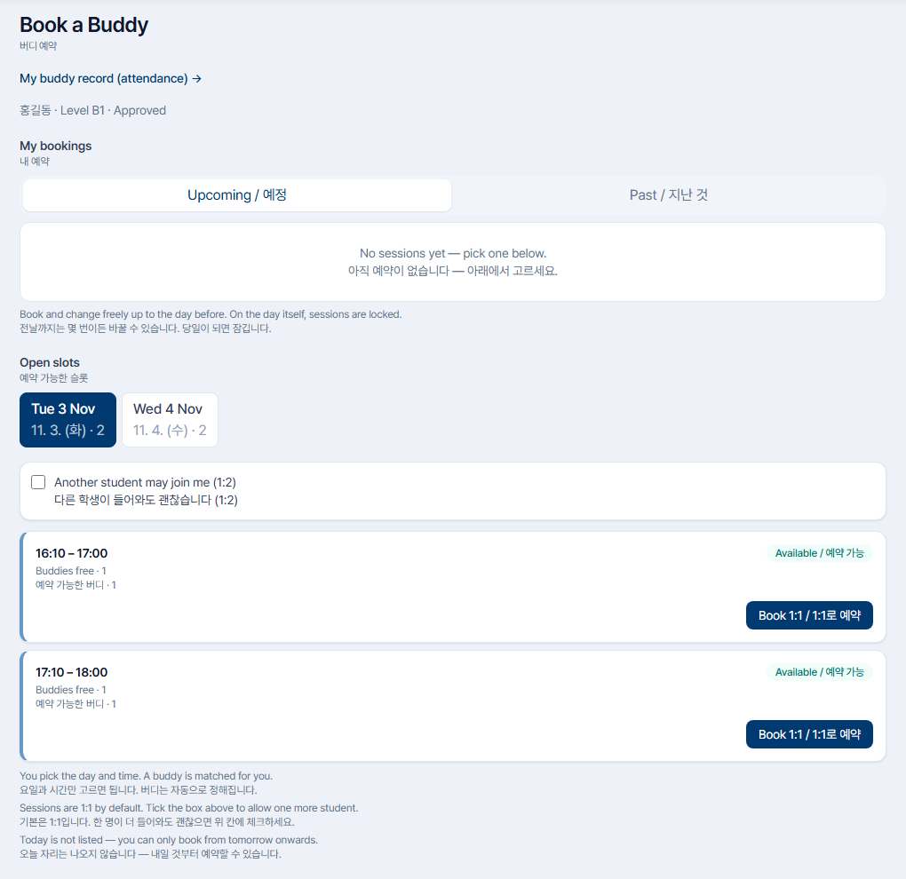
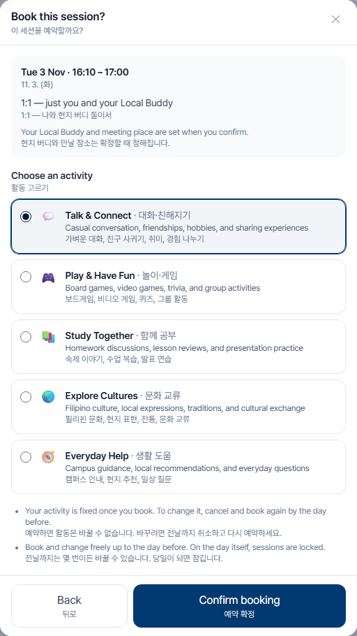
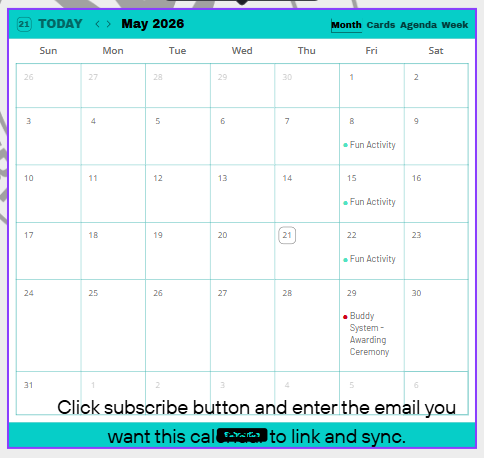
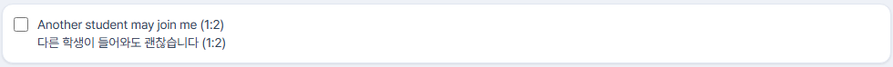
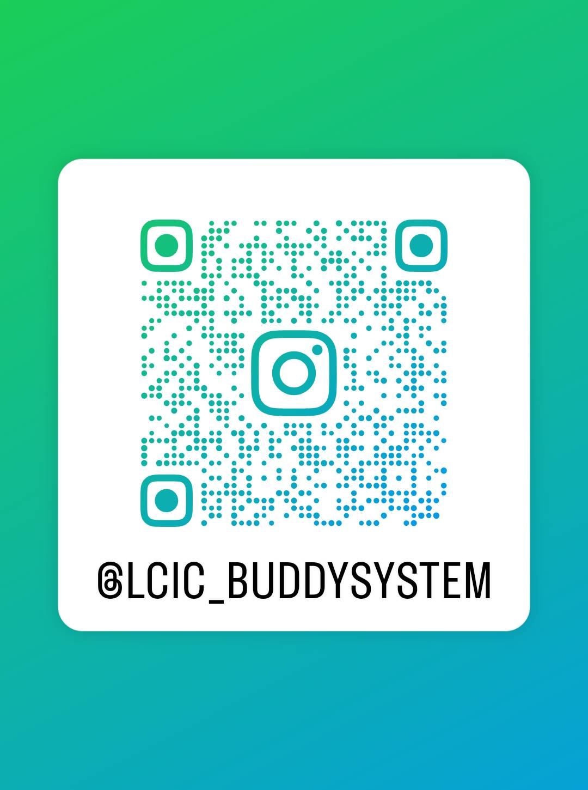

평일
16:10–17:00
17:10–18:00
17:10–18:00
예약·취소
전날까지
(당일은 잠김)
(당일은 잠김)
장소
앱에 📍로 표시
2층 SALC (금/행사)
2층 SALC (금/행사)
참고
선택과목 — 출석에 반영
버디 세션은 나(국제 버디)와 현지 버디(현지 LCIC 학생)가 짝이 되어 영어를 연습하고, 친구를 사귀고, 현지 문화를 배우는 활동입니다 — 한 세션 50분. 예약은 LCIC CAMPUS 화면의 Buddy에서 직접 합니다.
1 예약하는 법
- 로그인lcic-campus.com/login에서 서류를 올리던 것과 같은 계정(이메일 + 비밀번호)으로 로그인합니다.
- “Buddy” 열기아래쪽 메뉴의 Buddy를 누르면 Book a Buddy 화면이 열립니다.
- 날짜 고르기아래 Open slots에서 날짜 버튼을 누릅니다. 숫자는 그날 남은 자리 수입니다.
- 1:1 / 1:2 선택기본은 1:1입니다. 학생 한 명이 더 들어와도 괜찮으면 먼저 “Another student may join me (1:2)”에 체크합니다.
- 시간 예약 + 활동 고르기원하는 시간의 Book 1:1(또는 Book 1:2)을 누릅니다. 열리는 창에서 활동을 고르고 날짜·시간을 확인한 뒤 Confirm booking을 누릅니다.
- 완료확정하는 순간 현지 버디와 만날 장소가 정해집니다. 예약은 My bookings, Today, 시간표에 나옵니다.

Book a Buddy 화면: Open slots에서 날짜 선택 → (원하면 1:2 체크) → 시간 옆 Book 1:1.

예약 확인 창: 활동을 고른 뒤 Confirm booking.
2 시간 & 활동
5교시 — 사람이 많은 시간.
6교시 — 한산한 시간. 조용한 걸 원하면 이 시간.
예약할 때 아래 다섯 가지 중 하나를 고릅니다. 현지 버디가 그에 맞춰 준비해 옵니다.
💬 Talk & Connect
가벼운 대화, 친구 사귀기, 취미, 경험 나누기.
🎮 Play & Have Fun
보드게임, 비디오 게임, 퀴즈, 그룹 활동.
📚 Study Together
숙제 이야기, 수업 복습, 발표 연습.
🌏 Explore Cultures
필리핀 문화, 현지 표현, 전통, 문화 교류.
🧭 Everyday Help
캠퍼스 안내, 현지 추천, 일상 질문.
Fun Activity (금)
게임·대회·캠퍼스 투어 — 금요일 전용 50분. Event Guide 캘린더에서 확인.
예약한 뒤에는 활동을 바꿀 수 없습니다. 바꾸려면 전날까지 취소하고 다시 예약하세요.

Event Guide 캘린더 — Fun Activity는 매주 금요일. 행사 날짜·장소도 여기서 확인.
3 짝 & 만남 장소
현지 버디 1명 + 나. 기본값입니다.
현지 버디 1명 + 나 + 국제 버디 1명 더. “1 seat left”가 붙은 시간은 다른 학생이 1:2로 잡은 자리입니다 — Join 1:2로 합류하며, 그 학생이 고른 활동으로 함께합니다.

1:2도 괜찮으면 예약 전에 이 칸에 체크합니다.
4 취소 & 변경
- My bookings에서 세션 찾기Book a Buddy 화면 위쪽 My bookings에서 예약한 세션을 찾습니다.
- Cancel → OK세션 옆 Cancel을 누르고 “Cancel this buddy session?” 확인 창에서 OK를 누릅니다. 취소된 세션은 Cancelled로 표시됩니다.
⚠️ 취소한 세션엔 가지 마세요.
5 만날 때 QR 확인 & 버디가 안 올 때
- Show my QR시작 15분 전부터 Today(또는 Book a Buddy의 내 세션)에서 Show my QR을 누릅니다.
- 현지 버디가 찍기화면을 현지 버디에게 보여 주면 폰으로 찍습니다. 내 화면이 Checked in으로 바뀌면 끝 — Today에 Met이 보입니다.
코드는 30초마다 바뀝니다 — 사진·캡처로는 안 되니 화면을 켜 두세요. 끝난 뒤 15분이면 닫힙니다.
만남 장소의 버디 관리자에게 알리세요. 그 자리에서 다른 현지 버디와 붙여 주려고 합니다.
매일 명심: 목표를 갖고 예약하기 · 정시 출석 · 취소 피하기 · 세션 즐기기.
Accountable
Graceful
Organized
Obedient
Dedicated
Brave
Understanding
Dynamic
Diligent
You

@LCIC_BUDDYSYSTEM
QR을 스캔해 버디시스템 소식·행사·사진을 받아보세요.
Q 버디 세션은 어떻게 예약하나요?
lcic-campus.com/login에 로그인 → 아래 Buddy → Open slots에서 날짜 선택 → (1:2도 괜찮으면 Another student may join me (1:2) 체크) → 시간 옆 Book 1:1 → 활동 선택 → Confirm booking. 이때 현지 버디와 만날 장소가 정해집니다.
Q 언제까지 예약·취소할 수 있나요?
전날까지 자유롭게 할 수 있습니다. 당일에는 잠깁니다(Today — locked). 오늘 자리는 목록에 없고 내일 것부터 예약할 수 있습니다. 취소 방법: My bookings → Cancel → OK.
Q 시간대와 활동 종류는 어떻게 되나요?
평일은 16:10–17:00(붐빔)과 17:10–18:00(한산) 두 시간대입니다. 예약할 때 활동을 고릅니다: Talk & Connect(대화·친해지기), Play & Have Fun(놀이·게임), Study Together(함께 공부), Explore Cultures(문화 교류), Everyday Help(생활 도움). Fun Activity는 금요일 전용 50분 세션입니다.
Q 1:1과 1:2는 무엇이 다른가요?
1:1(기본) = 현지 버디 1명 + 나. 1:2 = 현지 버디 1명 + 나 + 국제 버디 1명 더 — 예약 전에 Another student may join me (1:2)에 체크합니다. 1 seat left가 붙은 시간은 Join 1:2로 합류할 수 있고, 먼저 잡은 학생이 고른 활동으로 함께합니다.
Q 버디는 어디서 만나나요?
평일 세션은 내 세션 옆 📍로 표시된 만날 장소에서 만납니다(Today 또는 Book a Buddy에서 확인). 금요일 Fun Activity·행사(예: 시상식)는 2층 SALC, Language Building. 정확한 장소·시간은 Event Guide 캘린더에서 확인하세요.
Q 출석은 어떻게 확인하나요?
시작 15분 전부터 Today에서 Show my QR을 눌러 현지 버디에게 찍게 합니다. Checked in이 뜨면 끝입니다. 코드는 30초마다 바뀌어서 캡처로는 안 됩니다.
Q 버디가 오지 않으면 어떻게 하나요?
만남 장소의 버디 관리자에게 알리세요 — 그 자리에서 다른 현지 버디와 붙여 주려고 합니다. 현지 버디의 태도 문제는 mariaalyssa.paquibot@lcic.edu.ph 또는 leo.ceniza@lcic.edu.ph로 이메일 주세요.
Q “No open slots right now”는 왜 뜨나요?
현지 버디들이 아직 시간을 열지 않았다는 뜻입니다 — 오류가 아닙니다. 나중에 다시 확인하세요.
Q 버디시스템 소식은 어디서 보나요?
인스타그램 @LCIC_BUDDYSYSTEM에서 행사·소식·사진을 볼 수 있습니다. 위의 QR 코드로도 바로 팔로우할 수 있습니다.
Lapulapu Cebu International College — CELS · Student Buddy System